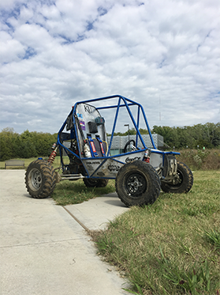

|
SAE Baja is a real-world engineering design project where Engineering students are tasked to design and build an off-road vehicle to be put through tough challenges on rough terrain. The object of the competition is to provide SAE student members with a challenging project that involves the design, planning and manufacturing tasks found when introducing a new product to the consumer industrial market. Teams compete against one another to have their design accepted for manufacture by a fictitious firm. Students must function as a team to not only design, build, test, promote, and race a vehicle within the limits of the rules, but also to generate financial support for their project and manage their educational priorities. |
 |
Captain |
Zach JonesTeam Captain |
|||
Leads |
Joeseph Lutz |
Michael Kitchen |
Abraham Dick |
|
Patrick Canny |
Russell Hedrick |
Ryan Martin |
||
Members |
Nicholas Janusz |
Mitch Latimer |
Joesph Block |
|
Jason Costello |
Nick Plorins |
Austin Dennis |